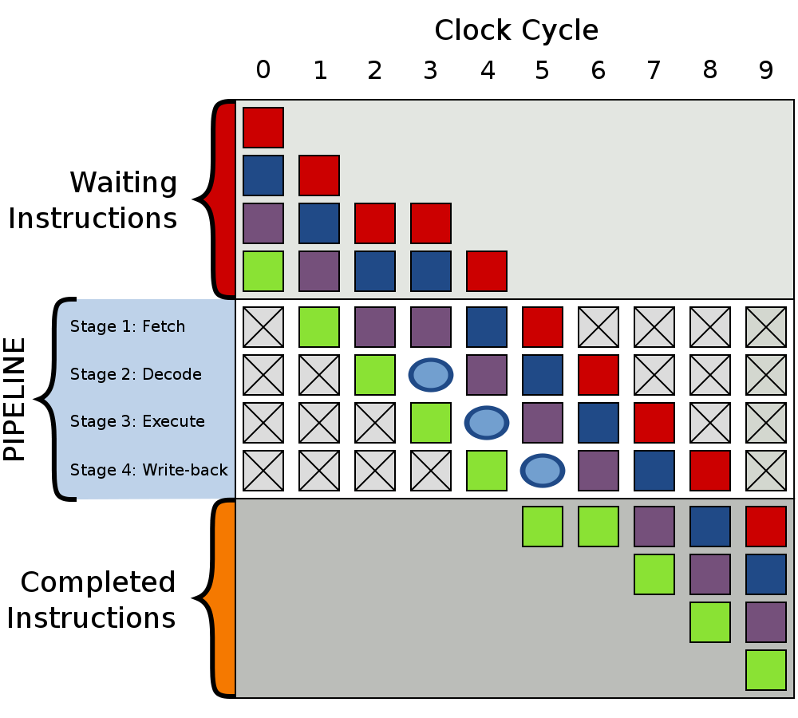

C++性能榨汁机之分支预测器(1)
什么是分支预测器？
我们首先看一下维基百科中对分支预测器的定义：
在电脑架构中，分支预测器（英语：Branch predictor）是一种数字电路，在分支指令执行结束之前猜测哪一路分支将会被运行，以提高处理器的指令流水线的性能。使用分支预测器的目的，在于改善指令管线化的流程。现代使用指令管线化处理器的性能能够提高，分支预测器对于现今的指令流水线微处理器获得高性能是非常关键的技术。
由定义可以看出，分支预测器的主要作用就是预测分支指令的跳转与否，如果预测结果是跳转，预测器还负责预测跳转的地址。
<!-- excerpt -->
为什么需要分支预测器？
上面我们大体了解了分支预测器的定义及作用，那么为什么CPU需要分支预测器，或者说分支预测器在程序指令执行过程中扮演什么角色？
如果要解释这个问题，我们需要先了解现代处理器的工作原理，任何一条指令在CPU中的执行都必须经历如下这些步骤：
- 取指（Fetch）：取指阶段从存储器读取指令字节，地址为程序计数器（PC）的值。
- 译码（Decode）：译码阶段完成指令的翻译，从寄存器文件读入最多两个操作数。
- 执行（Execute）：执行指令，如果是执行的是一条跳转指令的话，这个阶段会检查条件码和分支条件，决定是否选择分支。
- 写回（Write Back）：将指令执行结果保存到内存中。
现代处理器使用流水线架构主要是为了提高程序执行效率，比如在第一条指令进入执行阶段时，第二条指令已经开始译码，第三条指令处于取指阶段……相对于第一条指令完全执行完并写回内存再开始第二条指令的取指，效率提高了很多倍。当然，现代处理器一般流水线深度高达10-31级，对程序执行速度有着显著提高。

上述流水线架构对于顺序执行的命令，效果提高显著，但是遇到跳转命令时效率便会急剧下降，对于分支跳转指令，我们在执行完该指令之前是不知道是否发生跳转的，也就是说，我们在分支指令执行完之前，我们无法确定分支指令的下一条指令的地址，所以也就没法把分支指令的下一条命令放入流水线中，只能等待分支指令执行完毕才能开始下一条命令的取指步骤，所以流水线中就会出现气泡（Bubble），这会大大降低流水线的吞吐能力。

为了解决上述问题，分支预测器应运而生。当指令执行到分支跳转指令时，CPU不再是空等待分支跳转指令执行完毕给出下一条命令的地址，而是根据模型预测分支是否发生跳转以及跳转到哪里，CPU将预测到的指令直接放入流水线，去执行指令的取指、译码等工作。
当分支跳转指令完成执行阶段后，给出是否跳转的结果，CPU即可判断分支跳转预测是否正确，如果指令执行后的跳转结果与分支预测器预测结果相一致，则流水线继续往下执行，如果发现分支预测结果出现错误，则需要清空流水线，将前面不该进入流水线的指令清空，然后将正确的指令放入流水线重新执行。
总结
在分支预测器预测准确时可以提高CPU流水线的吞吐量，但是如果预测错误导致清空流水线指令，也会导致CPU效率降低。由上面的分析可以看出，分支预测的准确性对CPU执行效率影响很大，提高分支预测器的预测准确度是几十年来学术界及工业界研究的目标，后面的文章我会分析几个典型分支预测器模型的实现原理。